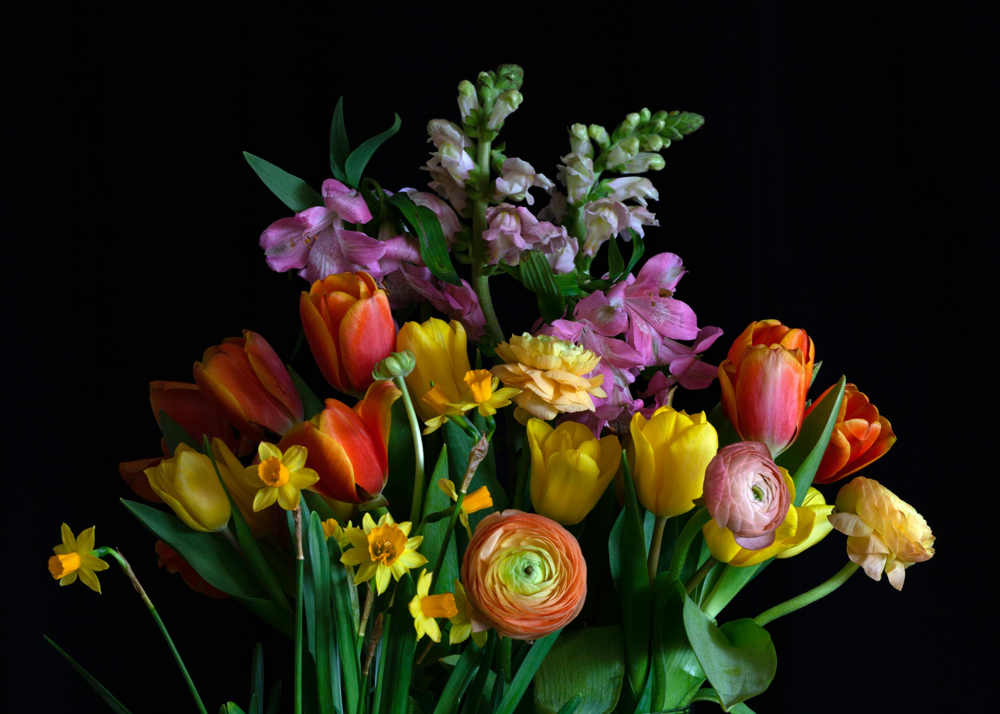
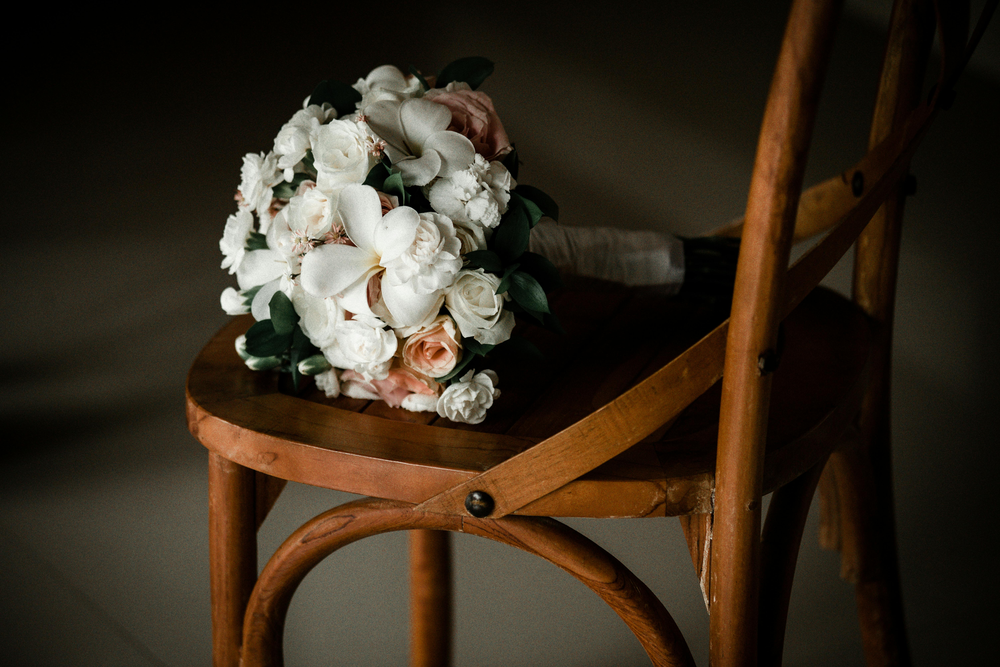
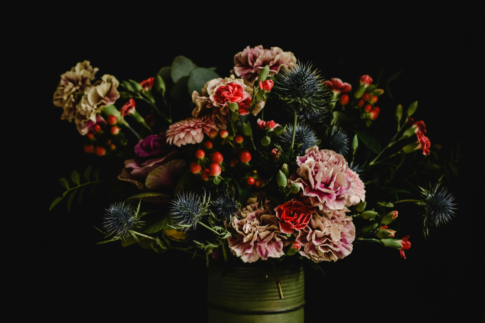

Welcome All
To our family-run flower business, dedicated to everything small that grows from the ground! Bulbs mostly, but we offer cut flower boxes too. Some of our favourites are spring Daffodils, the majestic summer lilies, and the deep blue hyacinth for autumn. You can visit our centre to see and buy flowers and bulbs in person. We supply happiness all year round when you see the flowers blooming.
Not only do we supply bulbs but also lovingly cut flowers for all types of occasions, from weddings to anniversaries and Valentine's Day. Expertly cut and arranged, delivered directly from our garden to your hands when you visit us.
Bulbs
Daffodil

Delicate dropping heads with a sweet fragrance. Perfect for brightening up spring corners of your garden.

Elegant white blooms with a crisp, clean look. They bring a serene beauty wherever they are planted.

Rich golden yellow flowers with a lovely scent. Classic daffodils that make a cheerful garden statement.
Crocus

Light to deep purple flowers adding color to gardens during autumn and winter.

Bright yellow blooms opening among green leaves. Fragrant and cheerful addition to any garden.

Light blue petals contrasting with a deep yellow throat, presenting a beautiful flower for spring displays.
Lilies

Fragrant lilies that leave the mind with images of deep space and beauty.

Deep orange with dark spots. Fierce, bold, and eye-catching in any garden.

Pure white, with yellow throat and subtle fragrance. Truly elegant and regal.
Seasonal

Seasonal Flowers

Seasonal Flowers
